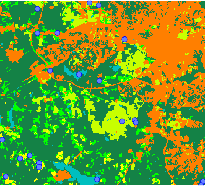

DESCRIPTION
r.sample.category generates points at random locations.
Each category (class) in a raster map will contain specified number
of random points.
NOTES
Mask (r.mask) to create points in areas
with each category, thus mask cannot be active when the module is used.
EXAMPLE
Generate three points at random location for each category (class)
in the raster map:
r.sample.category input=landclass96 output=landclass_points npoints=3
d.rast map=landclass96
d.vect map=landclass_points icon=basic/circle fill_color=aqua color=blue size=10

Figure: Three random points in each category of landclass raster map
KNOWN ISSUES
The module does not respect mask. More precisely it does not allow mask
to be active when it is started because it sets the mask by itself
for its own purposes. The mask is removed at the end of execution
but all other modules executed in parallel with this module (such
as rendering maps in GUI) will be influenced by the mask set
by this module.
SEE ALSO
v.sample,
r.random,
r.random.cells,
v.random,
v.what.rast
AUTHORS
Vaclav Petras, NCSU OSGeoREL,
Anna Petrasova, NCSU OSGeoREL
Last changed: $Date: 2013-12-19 17:46:26 -0500 (Thu, 19 Dec 2013) $